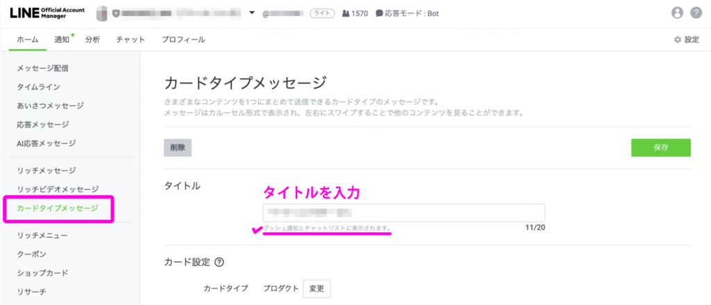
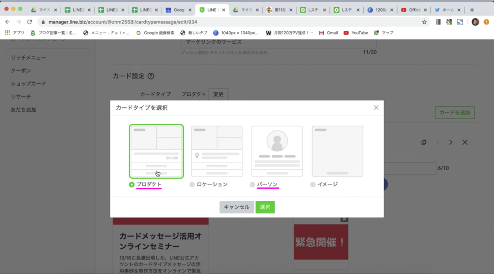
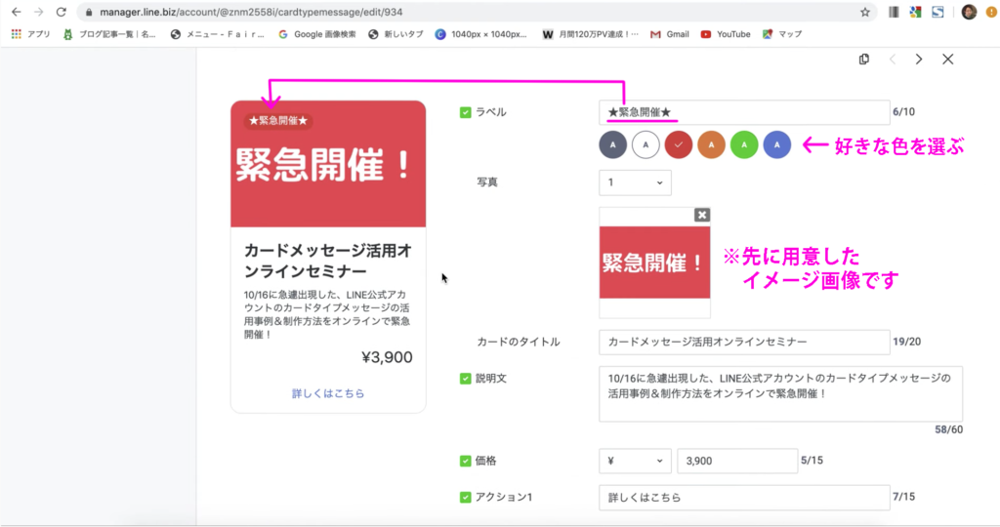
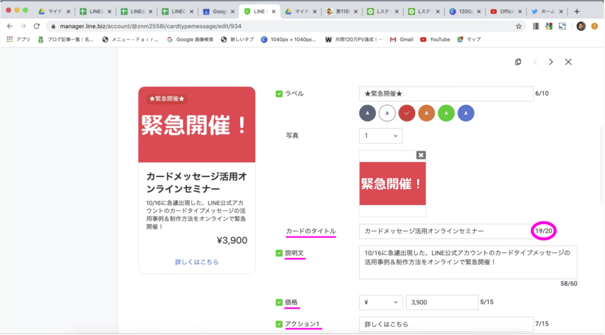
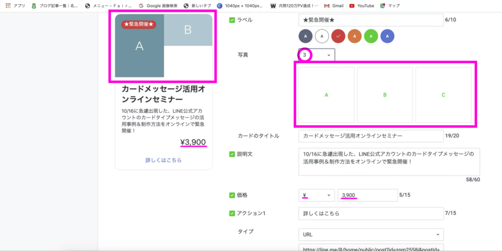
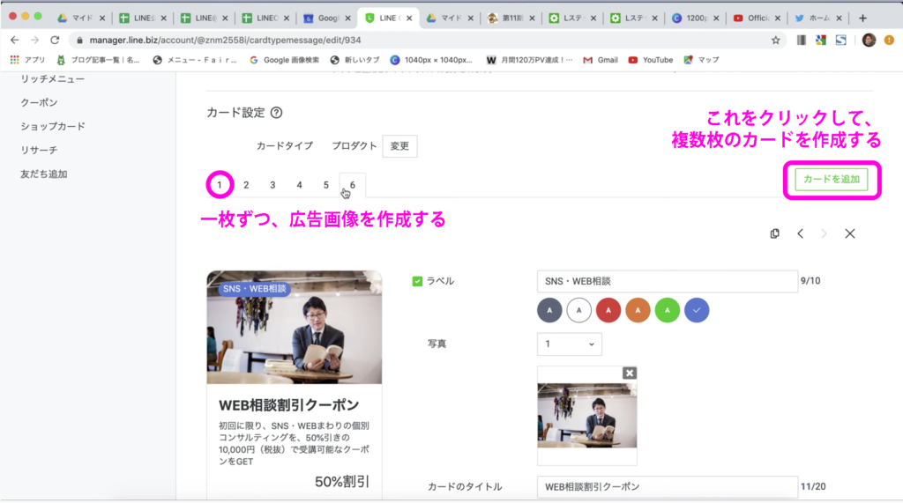
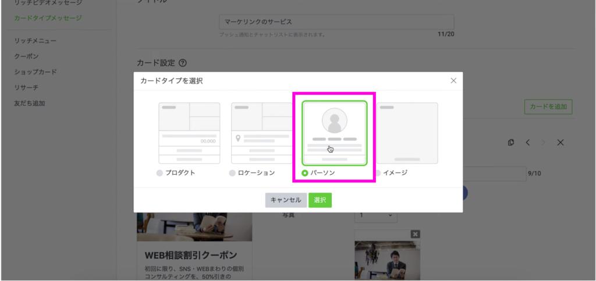
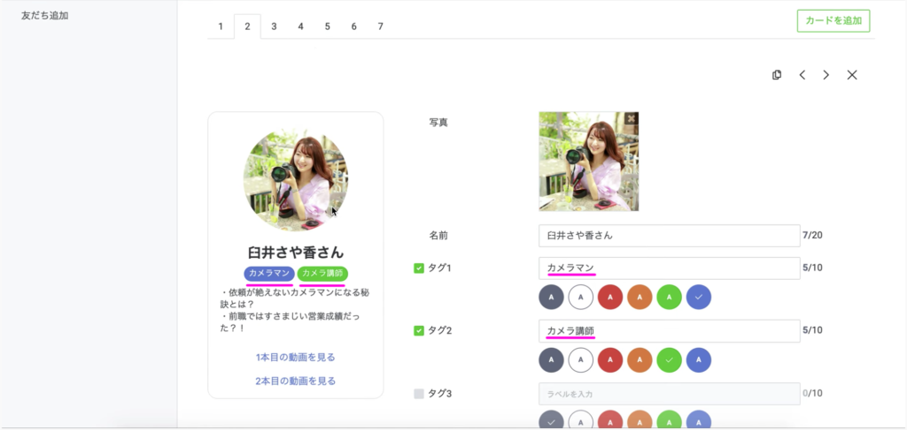
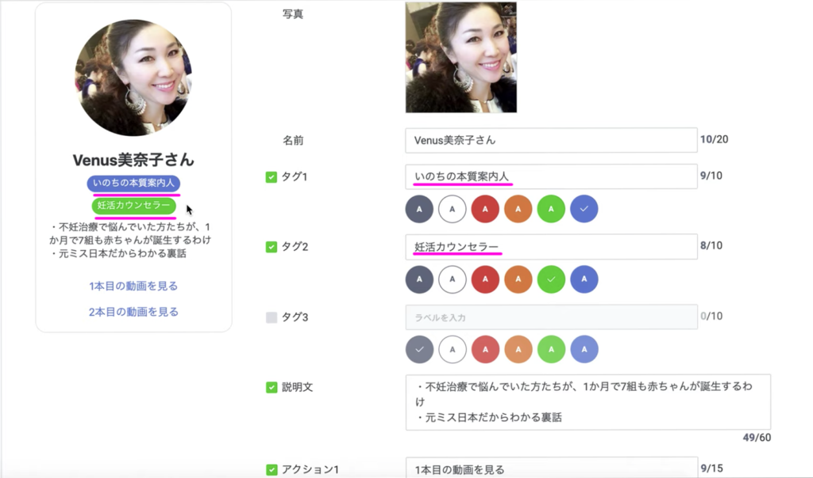

#017 カードメッセージ配信の方法

こんにちは！matsumotoです。このブログを読んでくださっている人のLINE公式アカウントの設定も、だいぶ進んできたのではないでしょうか。もうあと少しで色々仕込めるようになりますので、まずは基本設定をきちんとやりましょう！このブログの解説が少しでもお役に立てればうれしいです。
カードメッセージは、友だちのトーク画面に横並びに配置される広告画像のことです。たとえば、お店の日替わりランチメニューの広告から始まって、お店で飲めるオーガニックコーヒーの種類、お店のスタッフ紹介、お店の所在地案内…、という風に、右にメニューが連なって表示されます。ぜひタップしたくなるような素敵な写真やイラスト、わかりやすいキャッチコピーなど付けて、効果的にあなたのお店やビジネスを宣伝しましょう！それでは、解説していきます。
（１）LINE Official Account Managerからの作業です
カードタイプメッセージの作り方は、「#016 リッチビデオメッセージの作成方法」と大体同じような手順でPCから作成します。リッチメッセージとの違いですが、カードタイプメッセージはいちいちプロにデザインしてもらった画像を用意しなくても、写真とテキストだけ用意しておけば、決まったテンプレートでどんどん広告画像を作成できる、ということです。このテンプレートが意外にスッキリと見やすく、友だちに対する訴求力も高いので、ぜひ活用しましょう！

今回は、わかりやすいよう先に画像を用意しておきました。いつもおなじみ、LINE Official Account Managerにログインして、左メニューバーから「カードタイプメッセージ」を選択してください。

（２）画像とタイトルや説明文をつける

カードタイプメッセージを作成すると、まずは数字の１〜最大9までのタブが並ぶことになります。これが、横並びに展開する広告画像それぞれの設定タブ、ということになります。まずはタイトルをつけますが、画面にも表示されているように、「プッシュ通知とチャットリストに表示されます」ということで、友だちのトーク画面に表示される ので、きちんとしたタイトルをつけましょう。カードの数は最大９ですが、どこかのURLに飛ばすだけも良ければ、「もっと見るカード」としてさらに追加作成することができます。
（３）カードタイプを選択

「カードタイプ」のタブをクリックすると、四種類のカードタイプが表示されます。左から①「プロダクト（商品宣伝）」②「ロケーション（所在地のお知らせ）」③「パーソン（スタッフ・社員紹介）」④「イメージ（お店や会社の広告宣伝）」というような役割を設定することができます。より効果的で使いやすいのは、①「プロダクト」と③「パーソン」です。①「プロダクト」は具体的に商品を宣伝できるし、③「パーソン」はたとえば「生産者の顔」や「お店のスタッフの雰囲気」・「経営者の人柄」など、あなたのお店やビジネスの独自性を伝えやすいです。
（４）「プロダクト」の作り方

それでは、まず「プロダクト」の作り方を解説します。先に、商品やサービスの画像を用意しておきます。「プロダクト」の画面を開いたら、まず「ラベル」というボックスにチェックが入っている状態です。これは、左の画像に入っている通り、画像左上に表示されるタイトルです。下の色で文字のバックの色を変えることができます。
次に、画像をアップします。写真は３枚まで入れることができますが、個人的には１枚のほうがスッキリして分かりやすいと思います。
（５）プロダクトの内容を設定する
画像をアップしたら、説明文や価格、アクションを設定していきます。価格については、国別の通貨を選ぶことも出来ますし、数字だけでなく「先着順」など、言葉を入れることも可能です（15文字以内）。

「アクション」は、広告下に表示されるリード文のことです。「詳しくはこちら」など、見る人がタップしやすいよう、わかりやすい名前をつけましょう。「詳しくはこちら」を入れるなら、「タイプ」はURLを選択します。この広告画像から、お店や会社のWEBサイトのページに飛ぶ仕掛けです。
他にも、「クーポン」や「ショップカード」など、過去のブログで解説していますので、ここでこの広告画像を見る人にどういう行動をとってほしいのか、きちんと導線を考えて設定してください。
（６）さらに「カード」を増やしていく

ここまで出来たら、今度は新しいカードを追加作成していきます。先に説明した通り、９枚までカードを設定できますが、無理をしてまで９枚作る必要はありません。内容を絞り込んだ３枚だけ、というのも見る側にとってはわかりやすい場合もありますので、友だちが興味を持ってタップしてくれそうな広告画像をイメージして、作成しましょう。

ここで使う画像サイズですが、正確なピクセル数の決まりはなく、①「プロダクト」と②「ロケーション」については縦横比が１.５４：１の10MB以下の画像であればなんでもOKです（LINEの方で勝手に自動トリミングされます）。大きければ4,500×3,000px、小さければ64×64pxなどですが、広告画像は大切なので、なるべく高解像度のきれいな画像が望ましいです。
③「パーソン」については縦横比１：１の丸型、④「イメージ」は１.１１：１です。ご自分やスタッフの写真を載せる場合は、背景や身だしなみに注意して、友だちに良い印象を与える写真を撮りましょう。
（７）「パーソン」の作り方


基本的な作り方は、「プロダクト」と変わりません。「パーソン」なので、「タグ」を利用して「人」を宣伝する、という仕掛けです。「プロダクト」と違い、お名前と写真の下にタグを入力するボックスが表示されます。そこに肩書きや職種を入力し（たとえば、アクセサリー教室のオーナー様なら、ご自分のアクセサリー教室へのこだわりやアクセサリーデザインへの想などについて語るなど）、「アクション」の背景色を選択してください。「カードタイプメッセージ」同様、タイトルや説明文など、最大限魅力を伝えられるよう、頑張ってみてくださいね！

（８）最後に
以降は、カードメッセージ作成とほぼ同じ手順で進めます。これで、LINE公式アカウントの基本設定をきちんと理解してもらえると、僕もとてもうれしいです。このサイトを見てLINE公式アカウントを始めようとしておられる方、引き続きブログで初歩的な内容からちゃんと解説していきますので、一緒に頑張りましょう！